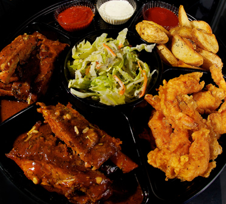

CUISINE &COCKTAILS

No gimmicks, microwaves or heat lamps. It's all original recipe and taste. Cooked when you order - usually a 30-minute wait to prepare your meal. For take-out orders, please call before you come. We specialize in mobile dinner trays, designed for your meal to look and taste the same whether you decide to dine-in or take it to go.
This is a great place for couples, family and friends. Sauce Live has been serving the military, local community and international tourists since 1992. We look forward to serving you.
Phone: (098) 936-0204
Hours of operation:
Tues-Thurs Takeout/Delivery/Catering (Only)
Closed Mon (except US holidays), Fri, Sat & Sun
Take-Out 4:30pm - 9:30pm
We will start taking orders at 430pm. Please call in before you come (098) 936-0204 or place your order online @ www.saucelive.com
Only 10 seats available, so 1st come 1st serve, unless you reserve the entire restaurant which is Party Trays Only Please.
Lunch Time Catering Available (Party Trays Only) Last Order 9pm. The Late Night Spot on Gate 2 Fri & Sat 10:30pm - 2:30am or sold out
Where: We're located on Hwy 58 between Camps Lester and Foster. Park around the corner on Route 85 at Keystone Church next to Family Mart.